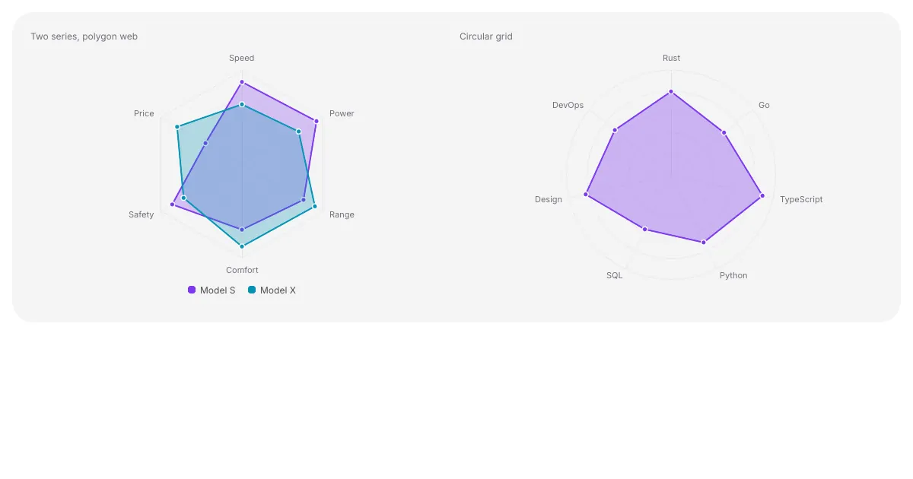

Radar Chart
Translucent polygons unfold from the center over a web grid; hover an axis to compare series.

Usage
Add glowkit next to eframe:
cargo add glowkit eframeThen draw it inside any egui Ui:
use glowkit::prelude::*;
use glowkit::charts::{RadarChart, RadarGrid};
ui.add(RadarChart::new(&series).labels(&["Speed", "Power", "Range", "Comfort", "Safety", "Price"]));
ui.add(RadarChart::new(&series).grid_shape(RadarGrid::Circle).dots(false));Prefer to own the code? The glowkit CLI copies this component's source into your project, shadcn-style:
cargo install glowkit-cli
glowkit add radar-chartEquivalent to
If you know this pattern from shadcn/ui, Recharts, Nivo and Evil Charts, Radar Chart is the Rust version: an original egui implementation, not a port, that runs natively and in WebAssembly.
- Radar Chartshadcn/ui
- RadarChartRecharts
- RadarNivo
- RadarEvil Charts
About Radar Chart
Radar Chart is one of 29 components in glowkit's Charts category. It lives in the glowkit-charts crate, enabled by the charts feature of glowkit (on by default). It reads its colors from the active glowkit theme, so it matches the rest of your app in light, dark or a custom brand theme, and every color, size and timing has a setter to override it.
Charts that draw in and respond to the pointer: line, area, bar, pie and donut, radar, radial, gauges, sparklines, scatter, heatmaps and calendar heatmaps, funnels, treemaps, candlesticks, Sankey diagrams and KPI tiles.